Tap To Scan · No Login · No Server · No App

Not Linked
A written MED ID band opens the person's name, blood type, allergies, and contacts here.
911 and Aid still work on this phone.
First-aid reference only. Not medical advice and not a substitute for emergency dispatch. Call emergency services and follow their instructions.
Local only once tap — everyone and everything. No servers · no online. No Bluetooth · passive HF NFC. No PII or PHI leaves this device through RedMed.
RedMed needs JavaScript to read the band on this phone. Call your local emergency number from the Phone app.